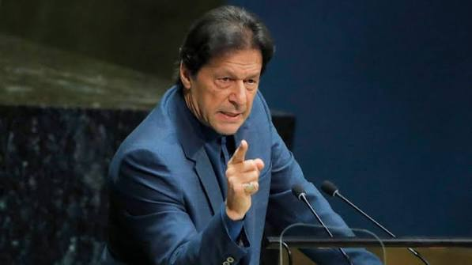

Imran Khan is widely recognized as one of the most influential leaders and legendary cricket captains in the history of Pakistan. Under his inspiring leadership, the Pakistan cricket team achieved its historic victory in the 1992 Cricket World Cup. His relentless drive, unmatched vision, and charisma on the field have left an everlasting legacy in sports.
Beyond his cricketing career, he transitioned into a prominent philanthropist and statesman, founding institutions like the Shaukat Khanum Memorial Cancer Hospital to provide free cancer care. His life journey is a powerful testament to perseverance, leadership, and public service, teaching generations the value of standing firm through every challenge.